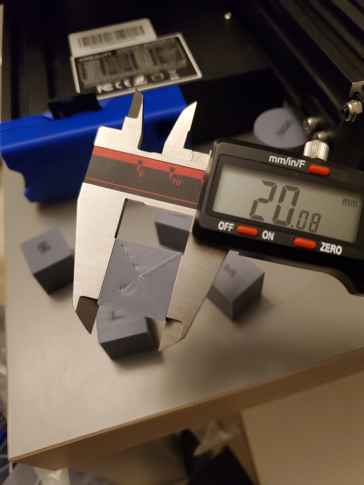
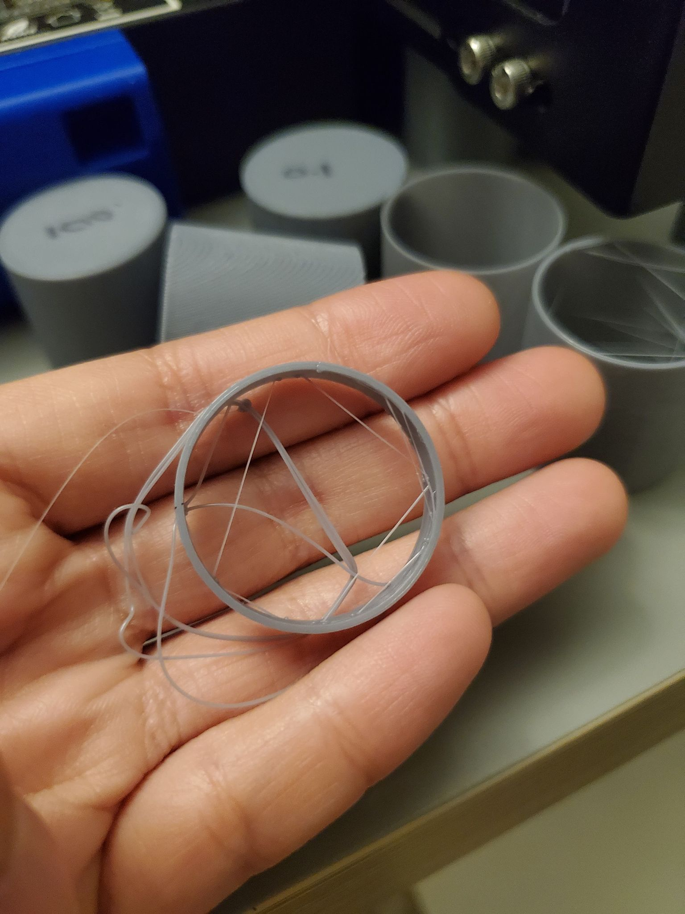
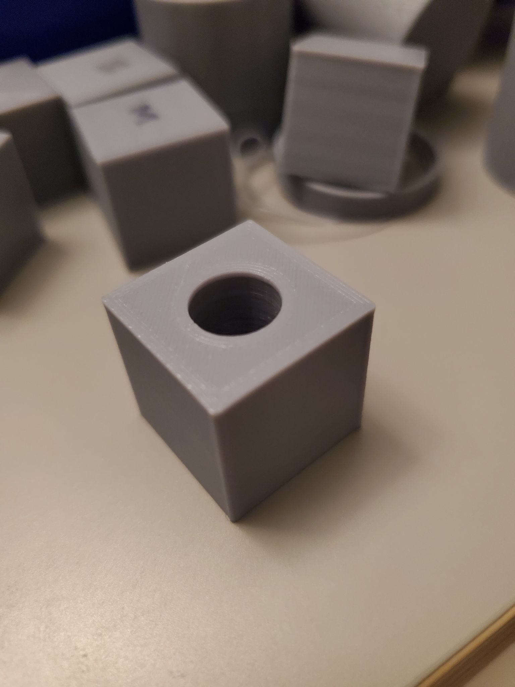

A2: Getting Started with 3D Printing!
The first step of this assignment was to assemble my 3D printer; however, I am incredibly lucky in that many things in my life magically appear and/or work!
Somehow, there was already a 3D printer built and ready to print at my place. Although, let's be honest.
It really means I live with my highly capable significant other who is very skilled at engineering stuff.
And as a gift for Xmas, he got a 3D printer. Anthony has been using it ever since then to fill our lovely office room with, PLA thingies.

In lieu of building a 3D printer, I watched the 30-min video Anthony used to build his.
While it certainly does not replace the experience of building a 3D printer myself, I have to give kudos to Tombof3DPrintingHorror on how well it articulated the whole build process.
We also made sure to go over the eccentric nuts, build plate level, and loose screws.
In fact, Anthony probably had to go over each at least 5 times because it takes me a really long time to understand engineering stuff. But I got it!
Below is his attempt at describing eccentric nuts. As you may notice, Anthony had to draw it several times because I was struggling to understand it...

Afterwards, we got to the really fun stuff! He showed me all the accessories he has built for his 3D printer, using his 3D printer.
1) There is a tool holder (for the Allen wrenches, wrenches, a screwdriver, end snips and spatula).
2) There is a tray/drawer to store a bunch of miscellaneous things.
3) There is a micro SD to SD card reader adapter - front, back (which houses this).
4) There is a knob that makes lifting the z-axis easier.
5) There is a filament feed arm - part A, part B.
And bonus! The googly eyes (though these weren't printed). It makes "Robi" that much cuter!
The last thing I did was print a bed gap. As part of HCDE 533, I decided to purchase the recommended glass bed, which Anthony did not have (he had the standard magnetic bed).
This was key to avoid having to adjust the printer each time we switched the beds, either by turning each bed level or raising/lowering the Z-axis end stop switch by same amount.
Since I personally hadn't printed anything yet, there was bound to be an error right off the bat. Basically, I came across my failed print - curse you, 3D printing gods! I then leveled the bed...
I had to select "Auto Home" and then "Disable Stepper Motors" on the screen. Using a piece of paper, I wedged it between the nozzle and bed, testing the resistance of each corner and adjusting the knobs.
Once I adjusted the build plate level, I was able to print out the bed gap with no problem! Below I have what the bed gap looks like in Cura, the failed print, the bed leveling, and successful print!

Finally, I measured the bed gap to make sure it was the same between the difference of the glass and magnetic bed, and then attached it onto the 3D printer.
I switched out the magnetic bed with the glass one, which meant I was finally ready to move onto the second part of the assignment!
The second step of this assignment was to test print and measure a bunch of things. Here's the collective crew of PLA thingies I printed per the Canvas assignment!
CUBE RESULTS
A 2cm cube with the standard "low quality" settings
Duration: 20 mins, X-20.16mm, Y-20.18mm, Z-20.00mm
A 2cm cube with the standard "standard quality" settings
Duration: 26 mins, X-20.07mm, Y-20.05mm, Z-20.04mm
A 2cm cube with the standard "super quality" settings
Duration: 48 mins, X-20.00mm, Y-20.00mm, Z-19.91mm
CONCENTRIC CUBE RESULTS
A 2 cm cube with a concentric top and bottom layer and your favorite print setting from the previous cubes.
Setting: Low, Duration: 19 mins, X-20.08mm, Y-20.07mm, Z-19.86mm

TUBE & CYLINDER RESULTS
A tube 3cm in diameter and 3cm high with a single extrusion wall thickness
Duration: 17 mins, X-29.95mm, Y-29.95mm, Z-29.80mm
A tube 3cm in diameter and 3cm high with a double extrusion wall thickness and random z-seam alignment
Duration: 19 mins, X-29.96mm, Y-29.96mm, Z-29.96mm
A cylinder 3cm in diameter exported with a 0.1mm tolerance
Duration: 50 mins, X-29.75mm, Y-29.75mm, Z-30.00mm
A cylinder 3cm in diameter exported with a 0.001mm tolerance
Duration: 52 mins, X-29.90mm, Y-29.90mm, Z-30.00mm
A cylinder 3cm in diameter with special mode "spiralize outer contour"
Duration: 29 mins, X-30.06mm, Y-30.06mm, Z-30.06mm
A cylinder 3cm in diameter printed on its side with supports on
Duration: 56 mins, X-30.00mm, Y-30.00mm, Z-30.04mm

Oops! Here was a failed test print. Basically, the glass was too slippery, so I added some L'oreal hairspray to increase the stickiness of the bed surface.

THE LAST SHAPE!
20.0mm +/- 0.1mm cube with a 10.0mm +/- 0.1mm hole through it
Duration: ?? mins, X-???mm, Y-???mm, Z-???mm
